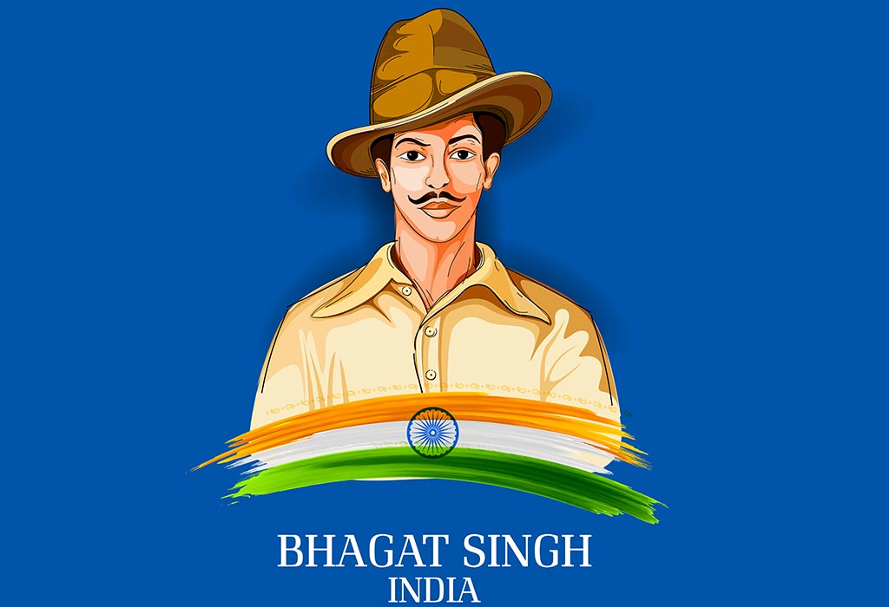

BHAGAT SINGH
They may kill me, but they cannot kill my ideas

A sketch of Bhagat singh
Below are the journey of Bhagat singh that are described within the years
- 1907- bhagat singh was born in banga, punjab.
- 1919- he was 12 years old, Singh visited the site of the Jallianwala Bagh massacre hours after thousands of unarmed people gathered at a public meeting had been killed
- 1921- he was among those in his village who welcomed protesters against the killing of a large number of unarmed people at Gurudwara Nankana Sahib on 20 February
- 1923- he joined the national college
- 1928- Singh was a prominent member of the Hindustan Republican Association (HRA) and was probably responsible, in large part, for its change of name to Hindustan Socialist Republican Association (HSRA)
- 1929- he proposed a dramatic act to the HSRA intended to gain massive publicity for their aims.Influenced by Auguste Vaillant, a French anarchist who had bombed the Chamber of Deputies in Paris
- 1931- Bhagat Singh and his two associates have been hanged. The Congress made many attempts to save their lives and the Government entertained many hopes of it, but all has been in a vain.
People of india always remember of Bhagat singh on his death anniversarry"
Want to know more about Bhagat singh click on tyhe link given here Bhagat singh wikipedia